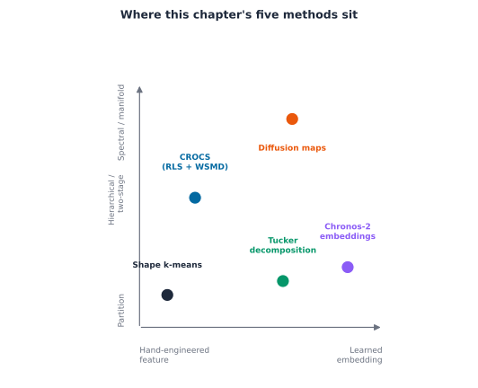
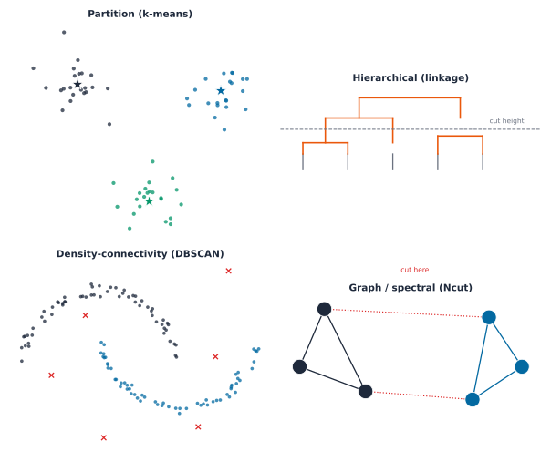
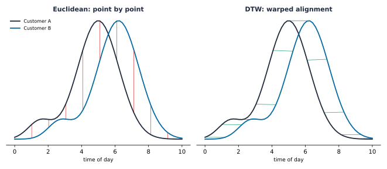
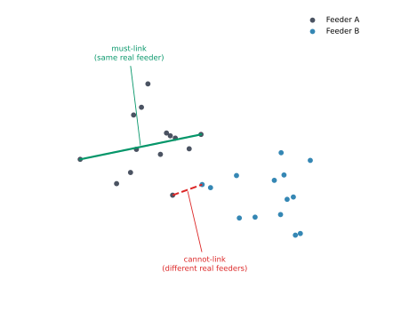
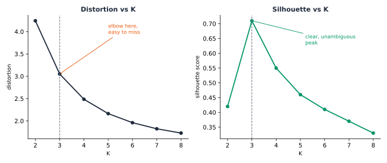

Chapter 1: Clustering Foundations
The primary bottleneck in the energy transition is not generation capacity, but rather the low-voltage network, which was constructed decades before bidirectional power flows were anticipated. Technologies such as rooftop solar, home batteries, and Electric Vehicle (EV) chargers are integrated incrementally at the property level, often remaining undetected by a Distribution System Operator (DSO) until operational failures, such as feeder trips or transformer overheating, occur. This scenario mirrors the failure experienced by the opening feeder in Part 4 Chapter 1. While a DSO serving a few hundred customers can feasibly monitor each individually, this approach becomes unfeasible at the scale required for a comprehensive energy transition. According to Wang, Chen, Hong, and Kang, clustering is identified as one of the three core pillars of smart meter analytics, alongside forecasting and load management [1]. Transforming a vast number of individual customers into a manageable set of recurring patterns is necessary for maintaining the tractability of Distributed Energy Resources (DER)-driven complexity.
A year-long analysis of demand across AusNet’s 342 households found 342 unique consumption patterns. Each customer has distinct power usage in timing, magnitude, and motivation. Averaging these patterns produces a result that does not reflect any individual customer. Likewise, a DSO cannot plan feeders, set tariffs, or manage demand-response programmes using 342 separate profiles. The practical approach is to identify a small set of recurring patterns that capture the diversity in these load curves. However, grouping similar patterns remains a complex challenge.
“Clustering” has no universal definition, and no single correct answer for how many groups a population like this one actually contains. Jain’s own retrospective on fifty years of work past k-means is explicit about this: the choice of objective function is itself a modelling decision, not a fact waiting to be discovered [2]. Four real questions this chapter answers, in order, before any chapter in this part clusters a single real customer:
- What formal criterion determines whether two customers or two feeders belong to the same category?
- Does a load curve require a specialised notion of distance and representation, or is a standard approach sufficient?
- In the absence of ground-truth labels, how can the validity of a discovered grouping be assessed to ensure it is not merely an artefact of the algorithm?
- How should background knowledge, such as information about customers sharing a physical feeder, directly constrain the clustering procedure instead of being used only to describe results after the fact?

Four ways to define a cluster
There are four main objective families that address the initial question. These families cover most relevant aspects discussed here. Each family optimises a specific criterion and identifies different structural patterns within the same population.
Key Concept
Partition-based objectives aim to identify \(K\) centroids that minimise within-cluster distances. This approach is based on MacQueen’s k-means formulation, later refined by the Lloyd algorithm and by Arthur and Vassilvitskii’s careful seeding, which addresses sensitivity to poor random initialisation [3], [4].
Hierarchical objectives build a tree by merging the two closest groups at each step, using one of three linkage rules. The single linkage rule considers the closest pair between groups, \(d_{SL}(G,H) = \min_{i\in G, i'\in H} d_{i,i'}\). The complete linkage rule considers the farthest pair, \(d_{CL}(G,H) = \max_{i\in G,i'\in H} d_{i,i'}\), while the average linkage rule takes the mean over every cross-group pair, \(d_{avg}(G,H) = \frac{1}{n_G n_H}\sum_{i\in G}\sum_{i'\in H} d_{i,i'}\), the family Ward’s own minimum-variance criterion belongs to [5].
Density-connectivity objectives group points into chains of nearby neighbours, avoiding the use of a fixed number of centroids. In the DBSCAN algorithm by Ester, Kriegel, Sander, and Xu, a point is classified as a core point if it has a sufficient number of neighbours within a specified radius, as a border point if it neighbours a core point but does not meet the core criteria itself, and as noise otherwise [6].
Graph-based and spectral objectives define clustering as partitioning a similarity graph. For example, Ng, Jordan, and Weiss propose the normalised cut criterion: \[\text{Ncut}(S_1,\dots,S_K) = \frac{1}{2}\sum_{k=1}^{K}\frac{\text{cut}(S_k,\bar{S}_k)}{\text{vol}(S_k)}\] where \(\text{cut}(S_k,\bar S_k) = \sum_{i\in S_k, j\notin S_k} w_{ij}\) represents the total similarity weight crossing the cut, and \(\text{vol}(S_k) = \sum_{i \in S_k} d_i\) is the total degree within \(S_k\). The problem is solved using the eigenvectors of the graph Laplacian \(L = D - W\) [7].

Hierarchical clustering is especially relevant here, as it is among the most widely used methods in the energy literature. Michalakopoulos et al. conducted a comparative analysis of k-means, k-medoids, hierarchical clustering, and DBSCAN using empirical data from a London population, which the next chapter also revisits [8]. Murphy’s textbook provides a comprehensive treatment of all four families, including worked numeric examples, which serves as a common reference point for this chapter and Part 2’s unsupervised-learning chapter, not a citation to re-derive from scratch.
Computational cost varies sharply across these four families, and that cost is itself a real selection criterion, not merely an implementation detail. Partition-based methods scale the most gently, \(O(nKdI)\) for \(n\) points, \(K\) centroids, \(d\) dimensions, and \(I\) iterations, making them the practical default at real utility scale. Hierarchical methods are markedly more expensive: \(O(n^2)\) space and \(O(n^3)\) time in the naive implementation, reducible to \(O(n^2 \log n)\) with a priority queue, a cost Murphy’s own textbook quantifies directly. Density-connectivity methods such as DBSCAN cost \(O(n \log n)\) once a spatial index is available, but degrade to \(O(n^2)\) without one. Graph and spectral methods carry the heaviest cost of the four, typically \(O(n^3)\) for the eigendecomposition of the similarity graph’s Laplacian, a real practical limit on how many customers or feeders a single spectral run can handle before an approximate or sparse solver becomes necessary.
These costs translate directly into a real selection criterion. A roughly known number of compact, well-separated groups favours a partition method, the cheapest of the four. A need to explore several candidate values of \(K\) from one run, rather than commit to one in advance, favours a hierarchical method’s dendrogram, at real extra cost. An expectation of genuine noise or non-convex shapes within the population, rooftop-solar adopters following an irregular seasonal curve rather than a tidy blob, say, favours density-connectivity. A similarity structure that a raw distance does not capture well, but a graph of pairwise relationships does, favours graph or spectral methods, provided the population is small enough, or the graph sparse enough, for that heavier cost to be worth paying.
Distance and representation
A load curve presents a more challenging target for any of these four families than generic tabular data, the second question above. Two households can share the same real evening routine and still be a few minutes out of phase, a genuine behavioural match that raw Euclidean distance reads as a mismatch.
Key Concept
Sakoe and Chiba’s Dynamic Time Warping (DTW) algorithm addresses a more general form of this problem. The alignment cost is determined using dynamic programming instead of a fixed point-by-point comparison, a method originally developed for spoken word recognition rather than for analysing power curves [9]. For two time series \(x = (x_1,\dots,x_n)\) and \(y = (y_1,\dots,y_m)\), the cumulative alignment cost is computed recursively as follows: \[D(i,j) = d(x_i, y_j) + \min\{D(i-1,j),\ D(i,j-1),\ D(i-1,j-1)\}\] where \(D(0,0) = 0\) and all other boundary cells are set to \(\infty\). The DTW distance between the two series is defined as \(D(n,m)\), the cost of the least expensive monotonic path through the pairwise distance matrix, in contrast with the fixed diagonal path plain Euclidean distance is forced to take. Aghabozorgi, Shirkhorshidi, and Wah’s review of time-series clustering identifies this type of representation and distance choice as an open research question, rather than one already resolved by generic clustering theory [10].

The convention the rest of this part follows, comparing peak-normalised shapes using plain Euclidean distance, is a defensible simplification for regularly sampled, already time-aligned Advanced Metering Infrastructure (AMI) data. Aghabozorgi’s review indicates that Euclidean distance performs comparably to warped alignment for such regular time series, although this is not a universal solution for every kind of time series.
Later chapters introduce two additional representations that extend this concept beyond a single flat feature vector. A single customer’s demand is better represented as an entire season of daily curves stacked together, organised by customer, day, and time-of-day, forming a genuine three-way array rather than a simple table. Tucker’s multi-way factorisation, originally developed for psychometric factor analysis, is designed to factorise exactly this type of tensor \(\mathcal{X} \in \mathbb{R}^{I\times J \times K}\) into a smaller core tensor and one factor matrix per mode, \(\mathcal{X} \approx \mathcal{G} \times_1 A \times_2 B \times_3 C\), the direct three-way generalisation of the standard matrix factorisation underlying principal component analysis [11]. In contrast, Coifman and Lafon’s diffusion maps employ a nonlinear approach to achieve a similar objective. They construct a Markov transition matrix \(P = D^{-1}W\) from a kernel similarity, followed by an embedding derived from the top eigenvectors, each scaled by its corresponding eigenvalue raised to a diffusion time \(t\), \(\Psi_t(i) = (\lambda_1^t \psi_1(i), \lambda_2^t \psi_2(i), \dots)\). This method captures manifold structure that a single graph cut may overlook, by watching where a random walk actually spends its time, not just which edges it crosses once [12].
Key Concept
Real AMI data rarely arrives ready to cluster. Aghabozorgi, Shirkhorshidi, and Wah’s own review treats this as a distinct stage in its own right, prior to and separate from the choice of distance measure [10]. A gap from a missed meter read needs to be imputed or the affected day excluded outright, not silently filled with zero, which would fabricate a false trough rather than an honest absence of data. Every customer’s readings need a common, regular sampling interval before any distance calculation is meaningful, since comparing a fifteen-minute series against a thirty-minute one is not comparing shape at all. And the aggregation window itself, a single day, a full week, or a season, is a real modelling choice, not an afterthought: too short a window mistakes one unusual day for a customer’s whole pattern, while too long a window can average away exactly the behavioural shift a later chapter’s own stability check is built to detect.
Common Mistake
Adding more features may appear to enhance safety by providing additional information. This becomes problematic, however, once the number of features approaches the size of the population being clustered: as dimensionality increases, pairwise distances tend to concentrate, genuine and spurious structure become harder to tell apart, and a clustering algorithm may begin to report splits that are merely artefacts of noise, rather than meaningful groupings. Ezugwu et al. and Ren et al. both identify the curse of dimensionality as an ongoing, unresolved challenge in their own recent surveys, rather than a problem that clustering theory has already retired [13], [14]. A subsequent chapter in this part runs directly into a concrete example of this specific failure mode, not just the general warning.
Common Mistake
Assuming every real population handed to a clustering algorithm is already one population. A vacant property still reports a smart-meter reading, near-zero and flat, that can look like a real, distinct behavioural archetype rather than the simple absence of a household behind it, and a faulty meter can report a stuck or clipped value that reads as an extreme outlier rather than a data-quality problem, neither is a new kind of behaviour worth clustering. A subtler version of the same mistake is mixing customer types that only look uniform on paper: residential and commercial customers, or genuinely different climates, are not one population for shape-based clustering’s own purposes, however uniform the billing category looks. A later chapter’s own check against a real, independently labelled population that mixes residential and commercial buildings runs into exactly this problem, and reports the real, honest limit it finds there rather than smoothing it over.
Clustering under constraints
The fourth question, real background knowledge constraining a clustering directly, has generated its own distinct body of literature, commonly referred to as constrained clustering.
Key Concept
Wagstaff, Cardie, Rogers, and Schrödl’s COP-KMeans algorithm modifies the standard k-means assignment step by incorporating two types of side information: a must-link constraint, which requires two points to be assigned to the same cluster, and a cannot-link constraint, which prohibits such an assignment. The algorithm simply rejects any assignment that would violate either, rather than optimising a soft penalty for breaking one [15].

This is the exact vocabulary a later chapter in this part needs once it starts clustering customers under the constraint that some of them share a single real physical feeder, a fact that a distance function alone cannot capture and should not be left to discover by accident.
The state of the art
The energy-domain literature has evolved from initial systematic comparisons to an increasing focus on representation learning. Chicco’s 2012 overview was the first to compare clustering methods for load-pattern grouping side by side, rather than introducing yet another method in isolation [16]. McLoughlin, Kwac, and Haben demonstrated that shape-based clusters reflect actual behaviour, not merely statistical artefacts [17], [18], [19]. Wang, Chen, Hong, and Kang’s 2019 review positions clustering as one of three main pillars of smart-meter analytics, alongside forecasting and load management, rather than as a niche technique [1]. Rajabi et al. (2020) pushed toward rigorous comparative benchmarking of clustering techniques specifically for load patterns [20].
In parallel, another line of research replaces hand-engineered shape features with learned ones entirely. Xie, Girshick, and Farhadi’s Deep Embedded Clustering [21] and Guo et al.’s improved version [22] have been broadly surveyed by Ezugwu et al. (2022, 847 citations) [13], Ren et al. (2024) [14], and Alqahtani et al.’s time-series-specific deep-clustering review [23]. Two recent and quite distinct real-world applications demonstrate the field’s current range: Satre-Meloy, Diakonova, and Grünewald link clustered peak-demand profiles to real occupant-activity data [24], and Eskandarnia, Al-Ammal, and Ksantini built an autoencoder-based load-profiling framework end to end [25]. Yerbury et al.’s CROCS is the most current and most directly relevant precedent, a two-stage framework that first summarises each consumer’s own representative daily behaviours, then clusters consumers by how similar those summaries are [26]. Not one of these, across a full decade of work, tests whether its own findings survive contact with a second, independently collected population, with more than a handful of clustering paradigms compared side by side. A later chapter in this part addresses this gap directly.
Evaluating a clustering
Every clustering method the rest of this part builds answers to the same set of real, literature-grounded decisions, in the order a practitioner actually faces them, starting with shape, not magnitude: two households can draw very different absolute power and still share the same underlying rhythm, and clustering on raw magnitude separates them by household size instead of behaviour. Every clustering method later in this part clusters on shape, established here first, applied concretely starting in the next chapter. Distance and representation matter too: Euclidean-on-shape, elastic alignment (DTW), a multi-way tensor factorisation, a nonlinear manifold embedding, and a learned representation (DEC, IDEC, Chronos-2) trade off real compute cost against what kind of similarity actually gets captured, the tradeoff Aghabozorgi, Ren, and Alqahtani’s reviews all name directly. None is a free upgrade over the others.
Key Concept
Relying on a single validity index is never sufficient. The silhouette coefficient, introduced by Rousseeuw [27], offers one perspective on cluster quality. It measures how well each point fits within its assigned cluster compared to the closest alternative cluster. \[s(i) = \frac{b(i) - a(i)}{\max\{a(i), b(i)\}}\] where \(a(i)\) is the mean distance from point \(i\) to the other members of its own cluster, and \(b(i)\) is the mean distance to the members of the nearest other cluster. Jain’s own retrospective is explicit that no single index is universally correct, and the rest of this part checks more than one every time a real number of clusters has to be chosen.
Choosing K
The silhouette coefficient serves a dual purpose. When averaged across all points, it helps determine the actual number of clusters in a population, eliminating the need for a distortion curve’s elbow.

Common Mistake
Determining the optimal value of \(K\) using the elbow of a distortion or inertia curve presents significant challenges. Distortion, by definition, decreases monotonically as \(K\) increases because the addition of clusters reduces within-cluster distances. As demonstrated in Murphy’s textbook, the elbow in the distortion curve is often difficult to identify, particularly at values of \(K\) where the silhouette curve exhibits a distinct peak. Consequently, subsequent chapters assess multiple validity indices rather than relying solely on a single curve.
Checking stability
When no ground truth exists, ensemble methods offer a practical way to assess stability. Strehl and Ghosh’s Cluster-based Similarity Partitioning Algorithm provides a clear example [28]. It builds a consensus similarity matrix by combining results from several independent clusterings of the same objects. \[S = \frac{1}{r}HH^\top,\qquad S_{ij} = \frac{1}{r}\sum_{m=1}^{r}\mathbb{1}\!\left[\lambda_m(i) = \lambda_m(j)\right]\] This value shows how often, across \(r\) independent clusterings, objects \(i\) and \(j\) appear together in the same cluster. Part 4 Chapter 3 used this co-association idea for phase identification, building on the work of Blakely and Reno [29]. The following sections will broaden this discussion, focusing on the general method that supports their approach.
Validating against reality
Internal validity indices and ensemble stability both measure how well a clustering is structured, but neither can confirm if it is correct, and neither, on its own, can even confirm the structure it measures is real rather than an artefact of one extreme point. The next chapter turns that gap into its own central question, before any later chapter trusts a clustering result at all. Once a settled methodology has survived that check, a further chapter addresses a second, complementary gap by introducing a controlled behavioural change: a deliberate intervention with a known outcome, allowing direct comparison between clustering results and ground truth in a way no internal index or resampling check can offer by itself.
Where this leads
None of this is only theoretical. A validated cluster becomes a real lever a DSO can pull: a tariff designed around a real archetype’s own rhythm rather than a population average, a targeted upgrade programme aimed at the customers actually likely to strain a feeder first, or a demand-response cohort chosen because its members’ own behaviour predicts they will respond, not because they happen to share a billing category.
The four central questions introduced in this chapter shape the structure of the chapters that follow. The next chapter does not yet cluster a single real customer; it settles the methodology first, which of this chapter’s own open questions, feature representation, dimensionality, and above all validity, actually matter in practice, checked against three independent real utilities before any of them is trusted as a settled choice. Only once that recipe is settled does the chapter after it apply it, for the first time, to AusNet’s real customers and feeders. Later chapters test whether that same settled approach, together with four different data representations, a two-stage summary focused on behaviour, tensor decomposition, a learned foundation-model embedding, and a diffusion-map perspective, produces consistent definitions of real structure across various populations, including households in London and Spain. The analysis then expands to higher levels of aggregation, such as entire substations, and explores new contexts, comparing real charging sessions with daily routines. The final chapter in this sequence examines clustering directly constrained by the physical feeder graph, bringing the methodological journey to a conclusion.